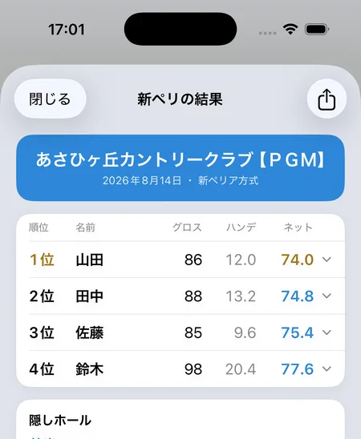

新ペリア方式は本当に「誰でも優勝できる」のか
SQORE編集部 ｜ 2026年8月14日更新
新ペリア（ダブルペリア）は「初心者でも優勝できる方式」と言われます。これは半分だけ正しい表現です。新ペリアはグロス差の80%を消しますが、残りの20%は消しません。だから上手い人のほうが構造的に有利で、そのうえで「叩いたホールが隠しに入ったか」という運が乗ります。このページでは、その仕組みを数式で示したうえで、コンペを3万回シミュレーションして実際の優勝率を出しました。
まず、計算式のおさらい
新ペリアは18ホールのうち12ホール（前半9から6・後半9から6）を「隠しホール」として、そのスコアからハンデを自動で作る方式です。
新ペリアの式
ハンデ ＝（隠しホール12ホールの合計 × 1.5 − コースのパー）× 0.8
ネット ＝ グロス − ハンデ
隠しホールの1ホールぶんの打数はダブルパー（PAR4なら8打）で頭打ちにするのが標準です。12ホールを1.5倍するのは、18ホールぶんに換算するためです（12×1.5＝18）。
核心：新ペリアはグロス差の「80%」しか消さない
ここが新ペリアのすべてです。仮に全ホールを均等に1ホールあたり m 打オーバーで回ったとして、式に入れてみます。
| 1ホールの平均オーバー | グロス | ハンデ | ネット |
|---|---|---|---|
| ±0（パー） | 72 | 0.0 | 72.0 |
| +0.5 | 81 | 7.2 | 73.8 |
| +1.0 | 90 | 14.4 | 75.6 |
| +1.5 | 99 | 21.6 | 77.4 |
| +2.0 | 108 | 28.8 | 79.2 |
グロスが18打増えるごとに、ネットは3.6打しか増えません。3.6 ÷ 18 ＝ 0.2。つまり──
新ペリアの本質
グロスが5打違えば、ネットに1打の差が残る。
グロス90の人とグロス100の人では、ネットで2打の差がつきます。この差は運では埋まりません。
なぜこうなるのか。犯人は式の最後の「×0.8」です。もしこれが×1.0だったら、上の表のネットは全員ぴったり72になります。つまり完全な運ゲーになる。0.8を掛けているのは、実力差をあえて2割だけ残すためです。
「新ペリアはハンデを出しすぎない」とよく言われるのは、この0.8のことです。上手い人が不当に沈まないようにする、よくできた設計になっています。
3万回シミュレーションしてみた
では実際の優勝率はどうなるのか。16人のコンペを3万回コンピュータ上で開催して数えました。参加者の実力は平均グロス97・標準偏差11でばらつかせ、1ホールごとのスコアは実際のゴルファーに近い分布（ラウンド間のブレが3〜7打に収まるよう調整）から発生させています。
| その日のグロス | 優勝率 | 全員均等なら6.2%なので |
|---|---|---|
| 70〜74 | 41.9% | 6.7倍 |
| 75〜79 | 27.4% | 4.4倍 |
| 80〜84 | 17.1% | 2.7倍 |
| 85〜89 | 9.5% | 1.5倍 |
| 90〜94 | 5.2% | 0.8倍 |
| 95〜99 | 2.7% | 0.4倍 |
| 100〜104 | 1.3% | 0.2倍 |
| 105〜109 | 0.5% | 0.1倍 |
| 110〜114 | 0.1% | ほぼゼロ |
優勝者の平均グロスは83.7でした。「誰でも優勝できる」と言われる新ペリアでも、実際に優勝しているのはその日80台前半で回った人です。100を叩いて優勝する可能性は1%台、110台ならほぼありません。
参加者の実力分布を変えれば数字は動きますが、「上手い人ほど有利」という順序は変わりません。これは前章のとおり式から決まっているためです。
では「運」はどこにあるのか
実力だけで決まるなら、そもそもコンペになりません。運が入り込むのは「叩いたホールが隠しホールに入るかどうか」の一点です。
| 隠しホールの平均オーバー | 隠し以外の平均オーバー | 差 | |
|---|---|---|---|
| 優勝した人 | +0.85 | +0.26 | +0.59 |
| 参加者全員 | +1.39 | +1.39 | ±0.00 |
優勝者は隠しホールのほうを悪く回っています。隠しホールで叩けばハンデが増え、隠れていないホールでまとめればグロスが守られる。この偏りが起きた人が勝つ、というのが新ペリアの構造です。全参加者の平均では差がゼロなので、この偏りは完全に抽選の運です。
逆に言えば「隠しホールをきれいにパーで回ってしまった」日は、ハンデがつかず勝てません。「調子が良かったのに入賞できなかった」の正体はこれです。
よくある思い込み①「ハーフにPAR3とPAR5が1つずつ入る」
「隠しホールは前半にPAR3が1つ、PAR5が1つ入るようになっている」と思っている人がいますが、抽選である以上そんな保証はありません。
各ナインがPAR3を2つ・PAR4を5つ・PAR5を2つ持つ標準的なコースで、9ホールから6ホールを選ぶ場合を厳密に数えました。
| 確率 | |
|---|---|
| 前半の隠し6ホールに、PAR3が1つ・PAR5が1つ ちょうど入る | 23.8% |
| 後半の隠し6ホールに、PAR3が1つ・PAR5が1つ ちょうど入る | 23.8% |
| 前半・後半の両方でそうなる | 5.7% |
約94%の確率で、その想定は外れます。ちなみに前半の隠し6ホールに入るPAR3の数は、0個が8.3%・1個が50.0%・2個が41.7%です。PAR3が2つとも隠れることは珍しくありません。
よくある思い込み②「隠しホールのパー合計は48」
「隠し12ホールのパー合計は48」という説明もよく見かけますが、これも抽選なら成り立ちません。
| 隠し12ホールのパー合計 | 確率 |
|---|---|
| 44 / 52 | 各 0.4% |
| 45 / 51 | 各 3.1% |
| 46 / 50 | 各 11.1% |
| 47 / 49 | 各 21.8% |
| 48（ちょうど） | 27.2% |
ちょうど48になるのは4回に1回程度です。パー合計が49や50になれば、その日は全員のハンデが少し出やすくなります。
ただし、ゴルフ場やコンペの主催者が「パーの合計が48になるように」12ホールを指定する運用もあります。その場合は毎回48で固定です。抽選なのか指定なのかで話が変わるので、気になるなら幹事に確認してください。
ダブルパー上限は「大叩きの逆転」を抑えている
隠しホールの1ホールをダブルパーで頭打ちにする標準ルールを、外すとどうなるか。同じ条件で比べました。
| その日のグロス | 上限あり（標準） | 上限なし |
|---|---|---|
| 70〜74 | 41.9% | 38.8% |
| 85〜89 | 9.5% | 8.7% |
| 100〜104 | 1.3% | 2.3% |
| 105〜109 | 0.5% | 1.6% |
| 110〜114 | 0.1% | 1.1% |
上限を外すと、100以上を叩いた人の優勝率が2〜10倍に跳ね上がります。1ホールで10打も打てばそのぶんハンデが青天井に増えるためです。ダブルパー上限は、大叩きがそのままハンデに化けるのを止める装置だと分かります。
実力が拮抗すると、一気に運ゲーになる
ここまでは実力差が大きい一般的なコンペ（標準偏差11）の話です。参加者の実力が近い場合（標準偏差3）はこうなります。
| その日のグロス | 実力差が大きいコンペ | 実力が拮抗したコンペ |
|---|---|---|
| 85〜89 | 9.5% | 12.7% |
| 90〜94 | 5.2% | 7.4% |
| 95〜99 | 2.7% | 4.0% |
差が縮まり、フラットに近づきます。実力が近いメンバーで新ペリアをやると、ほぼ隠しホールの引き勝負になるということです。「新ペリアは運ゲー」という感想と「実力どおり」という感想が両方あるのは、参加者の顔ぶれが違うからです。
結局、どうすれば勝てるのか
身も蓋もない結論ですが、普通に良いスコアで回ることが最大の攻略法です。グロス5打の改善はネット1打の改善として確実に効きます。運の部分は抽選なので、こちらから触れる余地はありません。
なお「隠しホールで意図的に叩けばハンデが増える」のは式のうえでは事実ですが、ダブルパーで頭打ちになるうえ、増えたハンデの8割しか手元に残らず、叩いたぶんはグロスにそのまま乗ります。差し引きで得になる場面はほとんどありません。何より、それはコンペの趣旨から外れます。
実際にあった1例
下の画面は、同じ組の4人の結果です。グロス最少は佐藤さんの85でしたが、順位は3位。優勝したのはグロス86の山田さんでした。隠しホールの引きが1打の差を作っています。
このときの隠しホールのパー合計は47で、後半の隠し6ホールにはPAR3が2つ入っていました。上で見た「思い込みが外れるケース」がそのまま起きています。
アプリなら隠しホールの抽選も集計も自動
打数を入れるだけで、順位まで出る
iPhoneアプリのSQOREは、チェックインで「新ペリ」を選んでおけば、隠しホールの抽選からハンデ計算、順位付けまで自動で行います。上の式を手で計算する必要はありません。
抽選は「日付＋ゴルフ場名」で決まるため、同じ日に同じコースを記録していれば誰の端末でも同じ12ホールが選ばれます。幹事が1台で入力しても、各自が別々に入力しても順位が揃います。ダブルパー上限にも対応しています。

よくある質問
新ペリアは誰でも優勝できる？
できません。グロス差の80%は消えますが、残り20%は消えません。グロスが5打違うとネットに1打の差が残ります。シミュレーションでも優勝者の平均グロスは83.7でした。
新ペリアとダブルペリアは違うもの？
同じものです。隠しホールが12ホール（ペリア方式の6ホールの倍）なので「ダブルペリア」、新しい方式という意味で「新ペリア」と呼ばれます。
隠しホールで大叩きすると得？
ほとんど得になりません。1ホールはダブルパーで頭打ちですし、増えたハンデは0.8倍されて8割しか残らない一方、叩いた打数はグロスに丸ごと乗ります。
ハンデに上限はある？
式そのものに上限はありません。コンペによっては「ハンデの上限は36まで」といった独自の上限を設けることがあります。上限を設けるかどうかで高スコアの人の勝ちやすさが変わるので、幹事は事前に決めておいてください。
ハーフ（9ホール）でも新ペリアはできる？
本来の新ペリアは18ホール前提です。9ホールでやる場合は隠しホールを6ホールにして換算の倍率を変えるなど、独自の取り決めが必要になります。
新ペリの集計、幹事がやらなくてOK
SQOREは隠しホールの抽選からハンデ計算・順位付けまで自動で行う無料アプリです。
ゲームをしない日はスコアアプリとしてそのまま使えます。いま打つホールの自分の平均スコアやOB率も出ます。
Download on theApp Storeこの記事の検証方法
優勝率は、16人のコンペを3万回シミュレートして集計しました。1ホールのスコアは「パーからの打数」の離散分布から発生させ、ラウンド間の標準偏差が実際のゴルファーに近い3〜7打に収まるよう調整しています。ハンデ計算はSQOREアプリの実装と同じ式（隠しホール12・ダブルパー上限・×1.5・×0.8）を使用しました。隠しホールのPAR構成の確率は、シミュレーションではなく組み合わせを全通り数えた厳密値です（各ナインがPAR3を2つ・PAR4を5つ・PAR5を2つ持つ標準的なパー72コースを前提）。参加者の実力分布を変えると優勝率の絶対値は動きますが、「グロス差の20%が残る」という関係は式から決まるため変わりません。